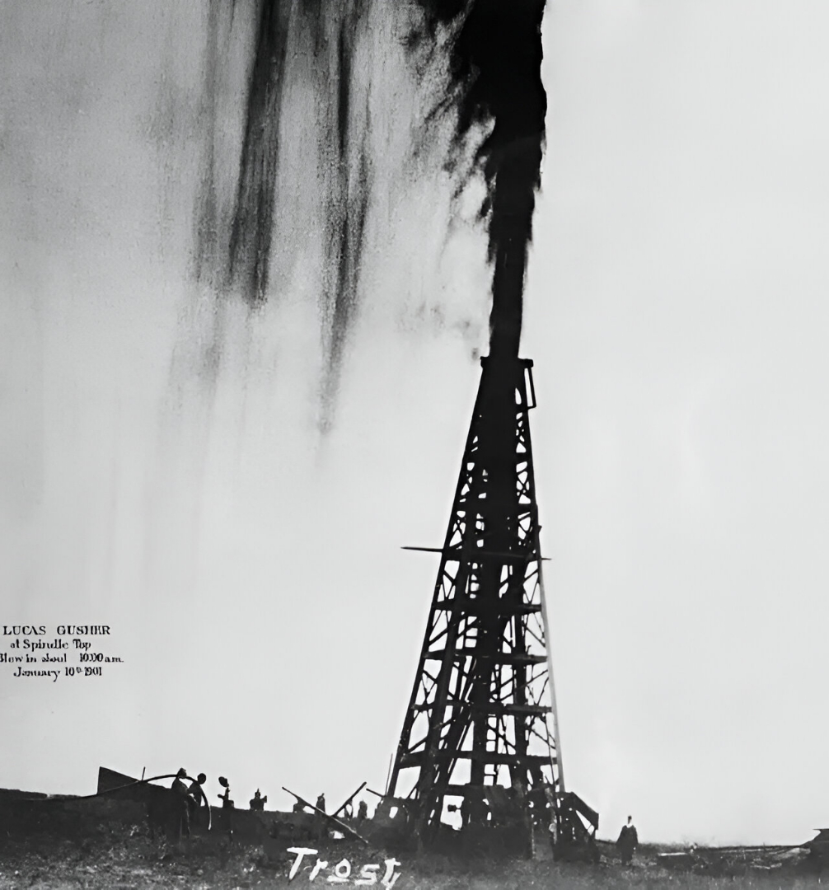
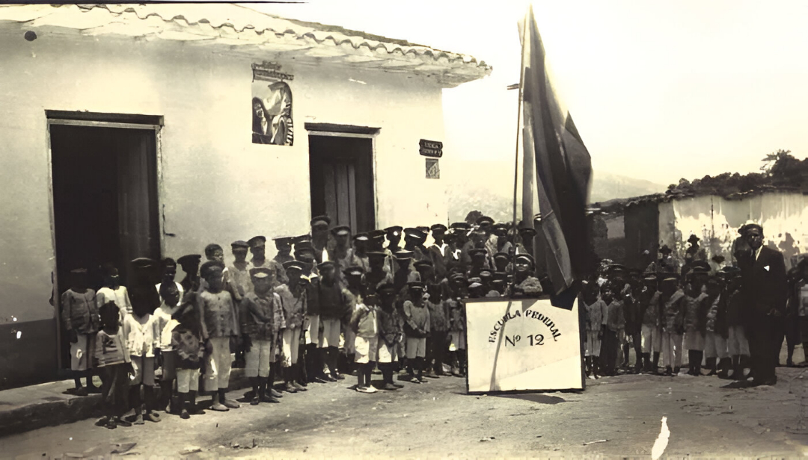

Desde las canoas indígenas que surcaban el Lago de Maracaibo hasta el rugido del Barroso II que transformó el destino de la ciudad, Cabimas ha tejido su historia con fuerza, fe y cultura. Esta sección es un recorrido por sus momentos más emblemáticos, donde cada fecha es una puerta abierta a las voces, colores y memorias que nos definen.
Los pueblos Añú y Wayuu habitaban las orillas del Lago de Maracaibo, construyendo palafitos y desarrollando una economía de pesca y trueque. Su cosmovisión estaba ligada al agua, al sol y a los ciclos naturales.
.jpg)
Los misioneros capuchinos fundaron la misión de San Ambrosio de Punta de Piedra, estableciendo las primeras estructuras religiosas y educativas en la zona.
.jpg)
El pozo Barroso II explotó con fuerza, marcando el inicio de la era petrolera en Cabimas. Miles de trabajadores llegaron, transformando la economía y el paisaje urbano.
Cabimas se consolidó como centro educativo y cultural, con la creación de escuelas, liceos y centros artísticos que fortalecieron la identidad local.
Cabimas se convirtió oficialmente en municipio autónomo, fortaleciendo su estructura administrativa y promoviendo el desarrollo local con identidad propia.
.jpg)
Cabimas experimentó un fuerte crecimiento poblacional, pasando de aproximadamente 190.000 habitantes en 1990 a 237.000 en 2000s

Se consolidaron zonas residenciales y comerciales, aunque comenzaron a evidenciarse problemas de servicios públicos.

Cabimas en 2025 es una ciudad resiliente que enfrenta desafíos económicos y sociales, pero mantiene viva su identidad cultural y comunitaria. Aunque marcada por el declive petrolero y problemas de servicios, sigue siendo un núcleo urbano activo en el estado Zulia..

Cada curiosidad es una escena que se despliega con emoción. Avanza, retrocede, amplía… y déjate sorprender.

El árbol Copaiba, usado por los indígenas para curar heridas, crecía en abundancia donde hoy está el casco central.

Los Añú vivían sobre el agua, en casas que giraban con el viento como veletas naturales.

El pozo Barroso II explotó en 1922 y brotó durante más de una semana. Se escuchaba desde kilómetros.

En los años 60, se proyectaban películas mexicanas con gaitas en vivo antes de cada función.
“Los pueblos decaen, no mueren” es la frase que acompaña la estrella dorada del escudo.
Cada rostro guarda una historia, cada historia una huella imborrable en nuestra tierra
Fechas: 1968 (creación del escudo)
Hallazgos: Diseñó el escudo de Cabimas con símbolos de fe, sol y resistencia. Su lema “Los pueblos decaen, no mueren” aún inspira.
Fechas: 1940–1980
Hallazgos: Fundadora de la primera escuela popular en Barrio Obrero. Enseñó a leer a más de 3,000 niños.
Fechas: 1788–1845
Hallazgos: General independentista nacido en Maracaibo, símbolo de lucha en toda la región zuliana. Su legado vive en plazas y escuelas.
Fechas: 1790–1828
Hallazgos: Heroína zuliana que enfrentó al ejército español con valentía. Su frase “¡Si muero, muero por la libertad!” resuena en la historia.
Fechas: 1923–2005
Hallazgos: Maestro del arte cinético nacido en Ciudad Bolívar, con obras expuestas en Cabimas. Su legado visual inspira a generaciones creativas.

Fechas: 1950–2010
Hallazgos: Compositor y gaitero cabimense que llevó la voz del pueblo a festivales nacionales. Fundador de agrupaciones emblemáticas como “Cabimas Gaita y Tradición”.

Fechas: 1935–2012
Hallazgos: Historiador cabimense que documentó la vida petrolera desde sus inicios. Fundó el Archivo Histórico de Cabimas y rescató testimonios obreros.
Fechas: 1948–1998
Hallazgos: Actriz y directora nacida en Cabimas, fundadora del Teatro Popular Zuliano. Promovió obras con identidad regional y formó generaciones de artistas.

“Cabimas nació flotando sobre el lago.”
Los Añú construyeron viviendas sobre pilotes en el Lago de Maracaibo, creando un pueblo acuático único.

“La fe llegó con libros, pan y esperanza.”
Frailes capuchinos fundaron escuelas y centros comunitarios, dejando huella educativa y espiritual.

“El petróleo ya susurraba bajo tierra.”
Antes del famoso Zumaque I, Cabimas ya era explorada por compañías extranjeras.

“La voz del pueblo se oyó por primera vez.”
Transmitía gaitas, noticias y mensajes educativos desde una caseta en el centro.
Desde 1917, Cabimas se convirtió en epicentro energético. Torres, tuberías y obreros marcaron el pulso de una ciudad que aprendió a latir con fuerza industrial.
Barrios como Ambrosio, La Rosa y Punta Icotea crecieron entre gaitas, concreto y esperanza. Cabimas se expandió sin perder su alma.
La gaita no se apagó. Las voces de Cardenales, los tambores de calle y los murales urbanos siguen contando lo que el petróleo no puede decir.
De Radio Cabimas a los podcasts locales, la ciudad aprendió a escucharse, a narrarse, a conectarse. Hoy, cada voz cuenta.
Cabimas no solo extrae: investiga, enseña, transforma. Desde institutos técnicos hasta proyectos culturales, la ciudad se reinventa con cada generación.
Cabimas sueña con energía limpia, turismo cultural y tecnología accesible. Porque su historia no termina: apenas comienza.
Población estimada: 624.000 (área metropolitana)
Municipio dividido en 9 parroquias
Identidad cultural fuerte: gaita, religiosidad popular, gastronomía, memoria petrolera
Desafíos: servicios públicos, migración, empleo
Oportunidades: turismo cultural, digitalización, participación comunitaria